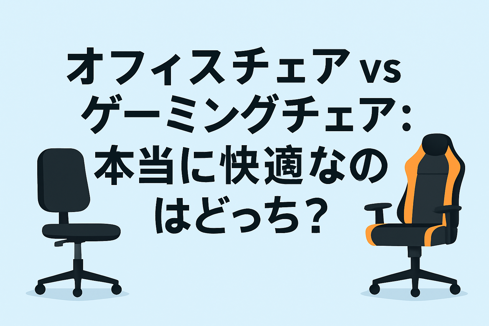

比較画像
はじめに
在宅ワークや長時間のゲームプレイが増えた今、「どの椅子を選ぶか」は快適な生活に直結します。 本記事では、「オフィスチェア」と「ゲーミングチェア」の違いを徹底的に比較し、それぞれの用途や選び方のポイントを詳しく解説します。 自分に合った椅子選びの参考になれば幸いです。
1. 外観とデザインの違い
オフィスチェアはシンプルで落ち着いたデザインが主流です。どんな空間にもなじむため、企業のオフィスなどで多く使われています。 一方、ゲーミングチェアはスポーティな見た目が特徴で、カラフルな配色やレーシングカーのような形状が印象的です。 好みや設置する空間に応じて、デザインを選ぶことも重要な要素です。
2. 機能性・調整機構
オフィスチェアは「腰への負担軽減」を重視し、座面の高さ調整やランバーサポート、背もたれの角度調整など、精密な調整機能が豊富です。 一方、ゲーミングチェアも多機能ですが、「長時間のプレイに耐えられる快適性」と「リクライニング機能」が大きな特徴です。 フルフラットになるものもあり、仮眠にも適しています。
3. 座り心地と長時間使用の快適性
オフィスチェアは通気性の高いメッシュ素材を採用しているものが多く、長時間座っていても蒸れにくい設計です。 ゲーミングチェアはクッション性に優れており、体を包み込むような座り心地を提供しますが、夏場はやや暑く感じることもあります。
4. 価格帯の違い
オフィスチェアは安価なものから高機能な高級モデルまで幅広く、1万円前後から数十万円のものまで存在します。 ゲーミングチェアも同様ですが、派手なデザインやリクライニング機構を備えたモデルは、2〜5万円が主流です。
5. 選び方のポイント
- 仕事中心なら： 長時間集中して作業できるオフィスチェアがおすすめ。
- ゲーム・配信中心なら： 包み込む座り心地とリクライニングが魅力のゲーミングチェアが最適。
- デザイン重視なら： お部屋のインテリアとの相性を考慮して選びましょう。
まとめ
オフィスチェアとゲーミングチェアは、それぞれに特化した魅力を持っています。どちらが「優れている」というよりも、用途やライフスタイルに合わせて最適なものを選ぶことが大切です。 このページを参考に、ぜひあなたにぴったりの椅子を見つけてください。